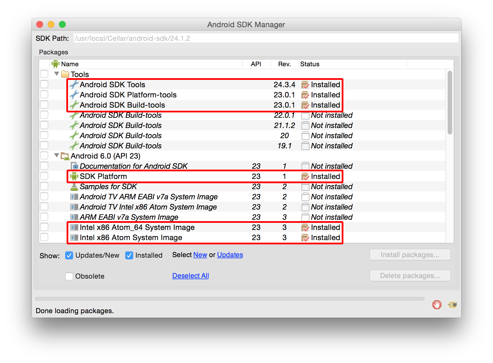
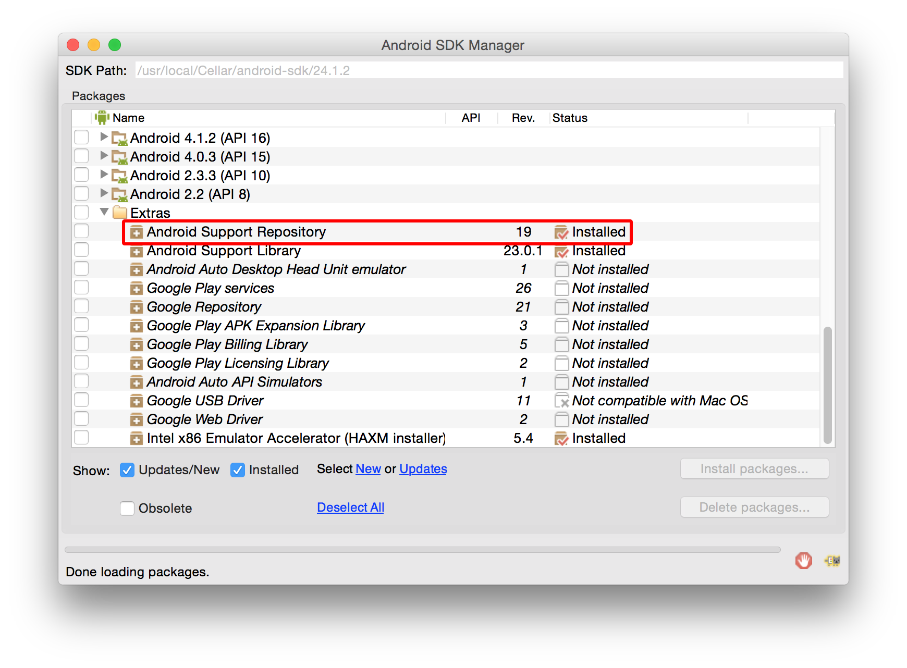
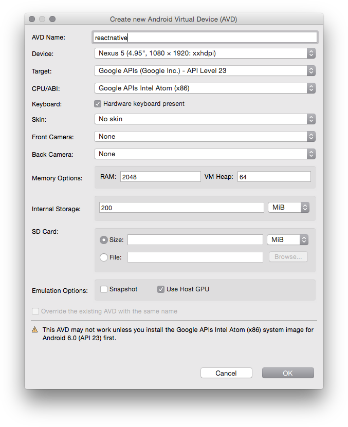

本指南主要介绍在Android模拟器上运行React Native Android应用所必须的准备步骤。我们在此并不讨论诸如IDE之类的开发者工具。
安装Git
Mac上如果你已经安装了XCode，那么Git也就随之安装了，否则请使用homebrew进行安装：
brew install gitLinux上请使用你系统对应的包管理器来安装Git。
Windows上请下载并安装Git for Windows。在安装过程中，请务必记得勾选
Run Git from Windows Command Prompt，这样会把Git的可执行程序加入到PATH环境变量中，这样其他程序才能在命令行中正确调用Git。
安装Android SDK(已安装的请跳过这一步)
安装Android SDK:
- Mac:
brew install android-sdk - Linux或Windows: 从Android开发者官网下载
译注：国内用户推荐从AndroidDevTools下载。
- Mac:
定义ANDROID_HOME环境变量
重要: 确保ANDROID_HOME环境变量指向你已经安装的Android SDK目录:
Mac, 往你的
~/.bashrc,~/.bash_profile或者你终端所用的其它配置文件中增加以下内容:
(译注：~表示用户目录，即/Users/你的用户名/，而小数点开头的文件在Finder中是隐藏的，并且这两个文件有可能还没有被创建。请在终端下使用sudo vi ~/.bashrc命令创建或编辑。如不熟悉vi操作，请点击这里学习)# 如果你是通过Homebrew安装SDK的，则加入下列路径 export ANDROID_HOME=/usr/local/opt/android-sdk # 否则可能是（当然具体视你把SDK放在哪）： export ANDROID_HOME=~/Library/Android/sdkLinux，往你的
~/.bashrc,~/.bash_profile或者你终端所用的其它配置文件中增加以下内容：export ANDROID_HOME=<你把Android SDK解压后放置的位置>Windows，打开控制面板，选择
系统和安全->系统->高级系统设置->高级->环境变量->新建，变量名填写ANDROID_HOME，变量值填写你把Android SDK解压后放置的位置。
译注: 如果你在windows下找不到对应的控制面板项，也可以右键点击我的电脑，然后在菜单中选择属性，然后选择高级系统设置->高级->环境变量->新建。注意：必须将现有的CMD窗口全部关闭，重新打开后新的环境变量才能生效。
开启gradle daemon
React Native Android使用的构建系统是gradle。我们建议你开启gradle daemon功能，它可以带来高达50%的java编译速度提升。点击这里来了解如何针对你的平台开启这一功能。
设置SDK
- 打开Android SDK Manager(Mac用户在终端下输入
android)。 - 选中以下项目：
- Android SDK Build-tools version 23.0.1
- Android 6.0 (API 23)
- Android Support Repository
- 点击"Install Packages" (译注：国内用户推荐使用腾讯Bugly的镜像来加速下载)  
安装Genymotion
Genymotion是一个第三方模拟器，它比Google官方的模拟器更易设置且性能更好。但是，它只针对个人用户免费。如果你想使用Google模拟器，请往下看。
- 下载并安装Genymotion
- 打开Genymotion。如果你尚未安装VirtualBox，它有可能会提示你安装。
- 创建一个模拟器并启动。
- 按下
⌘+M可以打开开发者菜单（在安装并启动了React Native应用之后）。
备选方案：使用Google官方模拟器
- 打开Android SDK Manager(参见"设置SDK"一步)
- 选中以下项目：
- Intel x86 Atom System Image (for Android 5.1.1 - API 22)
- Intel x86 Emulator Accelerator (HAXM installer)
- 点击"Install Packages"
- 配置硬件加速(HAXM)，否则模拟器会运行的相当缓慢。
- 创建Android虚拟设备(AVD):
- 运行
android avd并且点击Create... （译注：在Windows系统下，android.bat在Android SDK的tools文件夹下，请注意设置PATH环境变量以便于使用）  - 选中新创建的虚拟设备，并点击
Start...
- 运行
译注：对于Windows用户而言，Intel x86 Emulator Accelerator和HyperV（系统内置的虚拟机功能）不能同时启用。所以要么选择关闭HyperV（控制面板-程序-启动和关闭Windows功能，取消选择HyperV并点确定），要么选择Genymotion或Bluestacks作为模拟器。